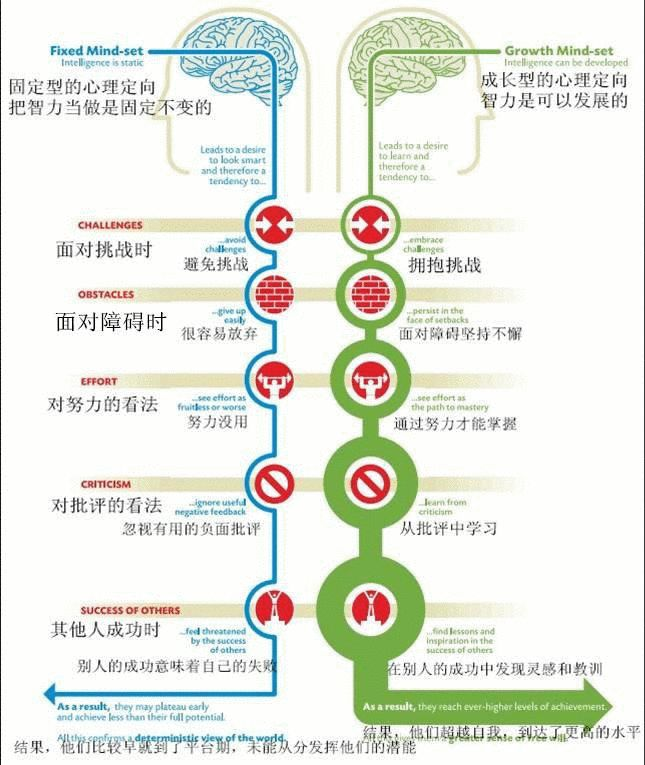

那么我们再来看一下，还会造成什么结果？上一次的讲课我也用到的表如下图。

最后一点很好重要，这一代的家长过多的强调竞争，孩子会认为，似乎别人的成功就是自己的失败。对于福州登山协会强调多合作，少竞争是很好的。
请大家注意，合作是很重要的。就像我们高中同学高考的时候，班上跟你成绩相差无几的同学真的是你的竞争对手吗？你觉得是对，但是你想想真正高考以后你们大学在一个学校吗？你们工作以后在同一个城市吗？你们真的是竞争的关系吗？如果你们不当彼此是竞争关系而是合作关系，互相取长补短互相帮助学习，你们的收获会多多少呢？ 我非常希望大家鼓励合作，不要把别人的成功当成自己的失败，多了解别人的成功我们还会收获很多经验和教训，可以让自己变得更加强大，多去欣赏别人的成功，这样我们也可以得到更多地朋友，心胸也会更加的宽广。
对孩子的称赞和批评，首先推荐孩子比较，别人的成绩可以作为参考，最重要的还是跟自己比，跟自己比较有什么好处呢？
如果孩子是班级第一名，如果跟自己比，那么他还是觉得自己还是可以超越自己的，如果孩子是班级三四十名，跟自己比较他还是觉得自己有自信是可以进步的，但是如果跟别人比的话，如果差距很大的话，孩子很可能是会感到更加绝望的。这两种不同的思维方式会造成巨大的差异。我希望登上协会的教练多强调努力，不要看中一时的表现。
如果家长/老师/传媒更看重天赋（固定不变的）而非努力，更看重结果而非过程，那么孩子容易形成固定的思维模式。
现在社会上很多家长不知道这些理念。除了家长还有没有其他原因呢？
我们社会流传的很多故事。 例如爱迪生的故事，我们知道的是他是一个天才，到21世纪还没有人可以超越。 一个人奋斗的天才，一个人一生有2000个专利。但是我们来了解一些，首先他不是一个人，他拥有一个30的团队包括一些科学家和著名的技术工人。当然他非常有商业头脑，很精明。其次，例如他的灯泡的发明，这是他一次的灵感吗？像李白斗酒诗百篇，是灵感来了挡都挡不住吗？再有灵感的诗人都是要付出努力的。爱迪生对于的灯泡的发明，也是经过几百道程序上万次的实验才成功的，正如他自己说的，在发明灯泡的过程中我不曾失败，我只是找到了一万种不能工作的方式而已。这就是一种成长观。成长观的人就是这样看待失败，不认为一两次的失败算什么，只要我还在努力坚持，就离成功不远了。面对挑战勇于尝试，勇于承担自己的不成功不完美。如果培养我们的孩子困难面前继续探索尝试，这是我们作为父母可以给他无可估量的财富。
达科沃斯获得了2013年的麦克阿瑟的天才研究奖。他的研究发现，对一个人成就影响最大的持久的热情和投入。这个很重要，甚至比一个人的智力还重要。
另外一个例子就是比尔盖茨。
我们知道比尔盖茨在哈佛大学大二就辍学了，去办了微软公司。当然是个天才，但是大家有没有想过他的背后是什么呢？
大家可能不知道，比尔盖茨在当时初中的时候就开始接触难得一见的计算机，整个美国的学校没有几所学校拥有计算机，当然他的家境很富裕，他在的那个学校是非常好的一所中学。他当时就开始接触计算机，到大学的时候他接触计算机的时间就已经超过了10000个小时，计算机作为一个新兴事物，可以说当时在哈佛大学没有多少老师可以教给他。大家没有看到天才背后的努力，其实都是一样的。对再有才华的人来说，他都需要持久的热情和投入。我给大家说了这些社会上的天才，其实他们这些人都是经过非常持久热情的努力的结果。
社会上还有一些例子，就是教育孩子要踏踏实实认真努力的例子，但是在社会似乎没有起到教育的意义。大家来看一下伊索寓言中的一则故事，就是龟兔赛跑，这是国外的一个小故事，中国也有一些类似的，例如只要功夫深，铁杵磨成针的故事。我们似乎很赞成这种观念，就是你只要努力了，扎扎实实，你就能变得更好，这难道不是一种成长观？我要说这确实是一种成长观，是一种强调积累的成长观。但我要说它错了，为什么呢？因为你如果要让孩子选择，大多数孩子是选择当兔子还是当乌龟呢？大多数孩子还是会选择当兔子，为什么呢？因为他会觉得乌龟只是趁着兔子睡着了这个偶然机会才赢的，其实还是兔子厉害。这则看似是肯定了乌龟，但是实际上孩子不买账，孩子会觉得如果说真的努力要那么的辛苦，那么的看不到希望，那我还是选择当更有才华有能力的兔子好了。所以这类故事，不管是龟兔赛跑还是愚公移山，这些故事都是传递了一种机械的成长思维。这是我自己思考的一种结果，其他书上还无从考究。那我们想一下为什么说这是一种机械的成长的思维呢？
大家想一下愚公移山的故事，十年前你每天的进展是一点点，十年后你的进展还是一点点，你没有任何的进步。孩子觉得，我都努力了十年，十年后我还是每天进步一点点，还是没有任何进展。所以我说这类故事虽然肯定了努力，但是给孩子传递的是一种机械的成长观。